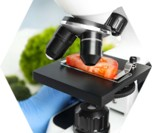

生产种植阶段管理
种植环境监测
通过物联网传感器实时采集土壤温湿度、光照强度、pH值等数据，结合气象站记录降雨量及气温变化，确保番茄生长环境符合绿色食品标准。
农事操作记录
详细记录播种时间、施肥种类（如有机肥/化肥配比）、灌溉周期及病虫害防治措施（包括生物农药使用量），所有数据同步至云端区块链存证。
采收批次编码
对每批次番茄进行唯一ID赋码，关联采收时间、地块编号、农残检测报告（需包含克百威等58项指标数据），实现源头信息数字化。
加工质检环节规范
种植环境监测
通过物联网传感器实时采集土壤温湿度、光照强度、pH值等数据，结合气象站记录降雨量及气温变化，确保番茄生长环境符合绿色食品标准。
采收批次编码
对每批次番茄进行唯一ID赋码，关联采收时间、地块编号、农残检测报告（需包含克百威等58项指标数据），实现源头信息数字化。
采收批次编码
对每批次番茄进行唯一ID赋码，关联采收时间、地块编号、农残检测报告（需包含克百威等58项指标数据），实现源头信息数字化。
运输销售阶段追踪
冷链物流监控
车载GPS+温湿度记录仪实时上传运输轨迹及车厢温度（冷藏车0-4℃），异常温度波动超过30分钟自动触发预警并冻结该批次追溯码。
渠道分销验证
经销商扫码入库时系统自动校验物流单号与电子签收单，防止窜货行为；零售终端扫码设备需通过MAC地址认证才能激活追溯信息展示。
消费者互动设计
扫码页面除展示全程溯源信息外，集成农场VR漫游、营养师推荐菜谱等增值内容，扫码满3次可解锁有机种植纪录片观看权限。
基础产品信息展示
产品身份标识
通过唯一加密二维码展示番茄的批次号、生产日期、保质期等核心信息，确保每份产品可精准识别。系统自动关联数据库调取品种名称（如"普罗旺斯番茄"）、规格（500g/盒）等标准化数据。
生产主体档案
详细披露种植基地名称、地理位置（精确到经纬度）、企业资质证书编号及联系方式，消费者可一键查询农业产业化龙头企业等认证背书。
可视化档案
支持上传番茄生长周期的高清图片或短视频，展示育苗、定植、采收等关键环节的真实场景，增强信息可信度。
质量检测数据披露
农残检测报告
完整呈现第三方检测机构出具的194项农药残留检测结果，采用红绿颜色标注超标/合格指标，同步显示检测标准（如GB 2763-2021）及检测方法（液相色谱-质谱联用法）。
营养成分析
动态展示番茄的维生素C（≥14mg/100g）、番茄红素（≥3mg/100g）等核心营养素含量，附带营养师解读建议，帮助消费者了解产品价值。
